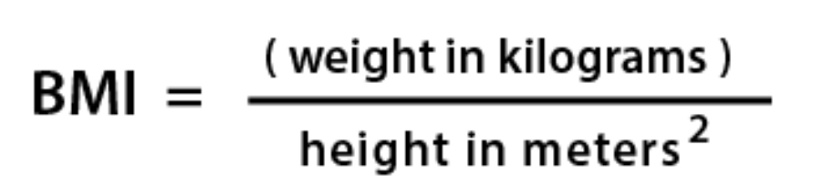
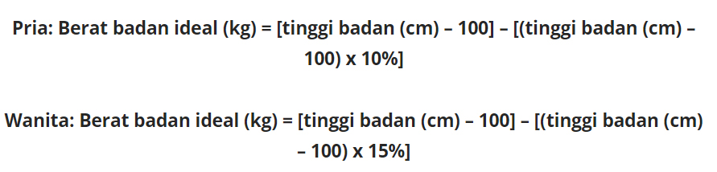

Body mass index (BMI) atau Indeks massa tubuh adalah metrik standar yang digunakan untuk menentukan siapa saja yang masuk dalam golongan berat badan sehat dan tidak sehat.
Berat badan ideal adalah berat badan yang dianggap paling menyehatkan bagi seseorang dengan mengacu pada tinggi badannya. Dengan kata lain, berat badan inilah yang akan memberikan angka harapan hidup paling tinggi bagi Anda.
